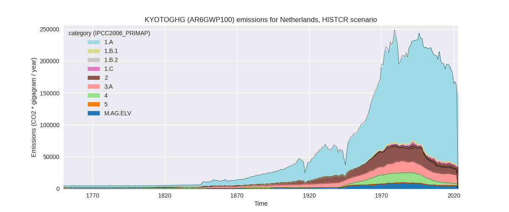

Changes in PRIMAP-hist v2.6_final compared to v2.5.1_final for Netherlands
2024-09-24
Johannes Gütschow
Change analysis for Netherlands for PRIMAP-hist v2.6_final compared to v2.5.1_final
Overview over emissions by sector and gas
The following figures show the aggregate national total emissions excluding LULUCF AR6GWP100 for the country reported priority scenario. The dotted linesshow the v2.5.1_final data.


The following figures show the aggregate national total emissions excluding LULUCF AR6GWP100 for the third party priority scenario. The dotted linesshow the v2.5.1_final data.
Overview over changes
In the country reported priority scenario we have the following changes for aggregate Kyoto GHG and national total emissions excluding LULUCF (M.0.EL):
- Emissions in 2022 have changed by -4.6%% (-7409.33 Gg CO2 / year)
- Emissions in 1990-2022 have changed by -0.2%% (-374.02 Gg CO2 / year)
In the third party priority scenario we have the following changes for aggregate Kyoto GHG and national total emissions excluding LULUCF (M.0.EL):
- Emissions in 2022 have changed by -3.6%% (-7286.62 Gg CO2 / year)
- Emissions in 1990-2022 have changed by -0.1%% (-301.07 Gg CO2 / year)
Most important changes per scenario and time frame
In the country reported priority scenario the following sector-gas combinations have the highest absolute impact on national total KyotoGHG (AR6GWP100) emissions in 2022 (top 5):
- 1: 1.A, CO2 with -12703.72 Gg CO2 / year (-10.0%)
- 2: 2, CO2 with 6166.69 Gg CO2 / year (115.3%)
- 3: 1.A, CH4 with -437.30 Gg CO2 / year (-21.4%)
- 4: 3.A, CH4 with 414.92 Gg CO2 / year (3.3%)
- 5: 4, CH4 with -326.37 Gg CO2 / year (-12.1%)
In the country reported priority scenario the following sector-gas combinations have the highest absolute impact on national total KyotoGHG (AR6GWP100) emissions in 1990-2022 (top 5):
- 1: 1.A, CO2 with -6495.16 Gg CO2 / year (-4.0%)
- 2: 2, CO2 with 6296.48 Gg CO2 / year (102.2%)
- 3: 4, N2O with -203.10 Gg CO2 / year (-25.5%)
- 4: M.AG.ELV, N2O with 98.80 Gg CO2 / year (1.7%)
- 5: 4, CH4 with -59.78 Gg CO2 / year (-0.7%)
In the third party priority scenario the following sector-gas combinations have the highest absolute impact on national total KyotoGHG (AR6GWP100) emissions in 2022 (top 5):
- 1: 2, HFCS (AR6GWP100) with -4162.73 Gg CO2 / year (-17.8%)
- 2: 1.A, CO2 with -3672.90 Gg CO2 / year (-2.7%)
- 3: 4, CH4 with 467.30 Gg CO2 / year (9.2%)
- 4: 4, N2O with 99.97 Gg CO2 / year (19.6%)
- 5: 1.B.2, CO2 with -49.59 Gg CO2 / year (-49.6%)
In the third party priority scenario the following sector-gas combinations have the highest absolute impact on national total KyotoGHG (AR6GWP100) emissions in 1990-2022 (top 5):
- 1: 2, HFCS (AR6GWP100) with -126.14 Gg CO2 / year (-0.7%)
- 2: 1.A, CO2 with -122.82 Gg CO2 / year (-0.1%)
- 3: 4, CH4 with -98.31 Gg CO2 / year (-1.0%)
- 4: 4, N2O with 18.64 Gg CO2 / year (3.4%)
- 5: 1.B.2, CO2 with 16.75 Gg CO2 / year (10.7%)
Notes on data changes
Here we list notes explaining important emissions changes for the country. ’' means that the following text only applies to the TP time series, while means that it only applies to the CR scenario. Otherwise the note applies to both scenarios.
- We have added EEA 2024 inventory data.
- Energy CO2 is 10% lower in 2022 and 4% lower cumulatively because EEA2024 data is lower than CRF2023 (CR). The difference in cumulative emissions mostly comes from chemical industry (1.A.2.c) and is very similar to the increase in process emissions from chemical industry, thus it seems that the emissions are just accounted for in a different sector. The higher 2022 changes comes from lower growth rates in EEA2024 (and EI2024) than in EI2023. In the TP scenario the change is smaller and only due to adjusted growth rates in the EI data.
- CO2 from chemical industry (2.B) is over 100% than in v2.5.1 higher as “other” emissions from chemical industry processes are several times higher in EEA2024 than in CRF2023 for all years (CR).
- CH4 in 1.A is much lower for 2022 because of an emissions decline in EEA2024 data (CR)
- N2O from waste is over 25% lower cumulatively because the estimates for emissions from domestic wastewater treatment and discharge are lower in EEA2024 than in CRF2023 (CR)
- Further sectors have 2022 changes in the CR scenario due to EEA2024 growth rates differing from growth rates from the third party sources used in v2.5.1.
- HFCs emissions for 2022 are 18% lower due to declining emissions in EEA2024 in contrast to the longer term trend used in v2.5.1.
- Changes in sectors 4 and 5 in the TP scenario are due to the removal of FAOSTAT data.
Changes by sector and gas
For each scenario and time frame the changes are displayed for all individual sectors and all individual gases. In the sector plot we use aggregate Kyoto GHGs in AR6GWP100. In the gas plot we usenational total emissions without LULUCF. ## country reported scenario
2022

1990-2022
third party scenario
2022
1990-2022
Detailed changes for the scenarios:
country reported scenario (HISTCR):
Most important changes per time frame
For 2022 the following sector-gas combinations have the highest absolute impact on national total KyotoGHG (AR6GWP100) emissions in 2022 (top 5):
- 1: 1.A, CO2 with -12703.72 Gg CO2 / year (-10.0%)
- 2: 2, CO2 with 6166.69 Gg CO2 / year (115.3%)
- 3: 1.A, CH4 with -437.30 Gg CO2 / year (-21.4%)
- 4: 3.A, CH4 with 414.92 Gg CO2 / year (3.3%)
- 5: 4, CH4 with -326.37 Gg CO2 / year (-12.1%)
For 1990-2022 the following sector-gas combinations have the highest absolute impact on national total KyotoGHG (AR6GWP100) emissions in 1990-2022 (top 5):
- 1: 1.A, CO2 with -6495.16 Gg CO2 / year (-4.0%)
- 2: 2, CO2 with 6296.48 Gg CO2 / year (102.2%)
- 3: 4, N2O with -203.10 Gg CO2 / year (-25.5%)
- 4: M.AG.ELV, N2O with 98.80 Gg CO2 / year (1.7%)
- 5: 4, CH4 with -59.78 Gg CO2 / year (-0.7%)
Changes in the main sectors for aggregate KyotoGHG (AR6GWP100) are
- 1: Total sectoral emissions in 2022 are 118170.04
Gg CO2 / year which is 77.1% of M.0.EL emissions. 2022 Emissions have
changed by -10.0% (-13177.55 Gg CO2
/ year). 1990-2022 Emissions have changed by -4.0% (-6523.93 Gg CO2 / year). For 2022
the changes per gas
are:
For 1990-2022 the changes per gas are:
The changes come from the following subsectors:- 1.A: Total sectoral emissions in 2022 are 116694.58
Gg CO2 / year which is 98.8% of category 1 emissions. 2022 Emissions
have changed by -10.1% (-13166.84 Gg
CO2 / year). 1990-2022 Emissions have changed by -4.0% (-6523.62 Gg CO2 / year). For 2022
the changes per gas
are:
For 1990-2022 the changes per gas are:
There is no subsector information available in PRIMAP-hist. - 1.B.1: Total sectoral emissions in 2022 are 76.43
Gg CO2 / year which is 0.1% of category 1 emissions. 2022 Emissions have
changed by 19.5% (12.48 Gg CO2 /
year). 1990-2022 Emissions have changed by 0.4% (0.39 Gg CO2 / year). For 2022 the
changes per gas
are:
There is no subsector information available in PRIMAP-hist. - 1.B.2: Total sectoral emissions in 2022 are 1399.03 Gg CO2 / year which is 1.2% of category 1 emissions. 2022 Emissions have changed by -1.6% (-23.19 Gg CO2 / year). 1990-2022 Emissions have changed by -0.0% (-0.70 Gg CO2 / year).
- 1.A: Total sectoral emissions in 2022 are 116694.58
Gg CO2 / year which is 98.8% of category 1 emissions. 2022 Emissions
have changed by -10.1% (-13166.84 Gg
CO2 / year). 1990-2022 Emissions have changed by -4.0% (-6523.62 Gg CO2 / year). For 2022
the changes per gas
are:
- 2: Total sectoral emissions in 2022 are 13991.92 Gg
CO2 / year which is 9.1% of M.0.EL emissions. 2022 Emissions have
changed by 73.1% (5908.55 Gg CO2 /
year). 1990-2022 Emissions have changed by 40.9% (6300.11 Gg CO2 / year). For 2022
the changes per gas
are:

For 1990-2022 the changes per gas are: - M.AG: Total sectoral emissions in 2022 are 18137.52
Gg CO2 / year which is 11.8% of M.0.EL emissions. 2022 Emissions have
changed by 2.4% (429.89 Gg CO2 /
year). 1990-2022 Emissions have changed by 0.6% (112.68 Gg CO2 / year). For 2022 the
changes per gas
are:
The changes come from the following subsectors:- 3.A: Total sectoral emissions in 2022 are 13565.51
Gg CO2 / year which is 74.8% of category M.AG emissions. 2022 Emissions
have changed by 3.1% (409.79 Gg CO2
/ year). 1990-2022 Emissions have changed by 0.1% (13.77 Gg CO2 / year). For 2022 the
changes per gas
are:
There is no subsector information available in PRIMAP-hist. - M.AG.ELV: Total sectoral emissions in 2022 are 4572.01 Gg CO2 / year which is 25.2% of category M.AG emissions. 2022 Emissions have changed by 0.4% (20.10 Gg CO2 / year). 1990-2022 Emissions have changed by 1.6% (98.91 Gg CO2 / year).
- 3.A: Total sectoral emissions in 2022 are 13565.51
Gg CO2 / year which is 74.8% of category M.AG emissions. 2022 Emissions
have changed by 3.1% (409.79 Gg CO2
/ year). 1990-2022 Emissions have changed by 0.1% (13.77 Gg CO2 / year). For 2022 the
changes per gas
are:
- 4: Total sectoral emissions in 2022 are 2950.10 Gg
CO2 / year which is 1.9% of M.0.EL emissions. 2022 Emissions have
changed by -16.2% (-570.23 Gg CO2 /
year). 1990-2022 Emissions have changed by -3.0% (-262.88 Gg CO2 / year). For 2022
the changes per gas
are:
For 1990-2022 the changes per gas are: - 5: No data
third party scenario (HISTTP):
Most important changes per time frame
For 2022 the following sector-gas combinations have the highest absolute impact on national total KyotoGHG (AR6GWP100) emissions in 2022 (top 5):
- 1: 2, HFCS (AR6GWP100) with -4162.73 Gg CO2 / year (-17.8%)
- 2: 1.A, CO2 with -3672.90 Gg CO2 / year (-2.7%)
- 3: 4, CH4 with 467.30 Gg CO2 / year (9.2%)
- 4: 4, N2O with 99.97 Gg CO2 / year (19.6%)
- 5: 1.B.2, CO2 with -49.59 Gg CO2 / year (-49.6%)
For 1990-2022 the following sector-gas combinations have the highest absolute impact on national total KyotoGHG (AR6GWP100) emissions in 1990-2022 (top 5):
- 1: 2, HFCS (AR6GWP100) with -126.14 Gg CO2 / year (-0.7%)
- 2: 1.A, CO2 with -122.82 Gg CO2 / year (-0.1%)
- 3: 4, CH4 with -98.31 Gg CO2 / year (-1.0%)
- 4: 4, N2O with 18.64 Gg CO2 / year (3.4%)
- 5: 1.B.2, CO2 with 16.75 Gg CO2 / year (10.7%)
Changes in the main sectors for aggregate KyotoGHG (AR6GWP100) are
- 1: Total sectoral emissions in 2022 are 135673.71
Gg CO2 / year which is 69.7% of M.0.EL emissions. 2022 Emissions have
changed by -2.7% (-3722.49 Gg CO2 /
year). 1990-2022 Emissions have changed by -0.1% (-106.07 Gg CO2 / year). For 2022
the changes per gas
are:
The changes come from the following subsectors:- 1.A: Total sectoral emissions in 2022 are 132823.49
Gg CO2 / year which is 97.9% of category 1 emissions. 2022 Emissions
have changed by -2.7% (-3672.90 Gg
CO2 / year). 1990-2022 Emissions have changed by -0.1% (-122.82 Gg CO2 / year). For 2022
the changes per gas
are:
There is no subsector information available in PRIMAP-hist. - 1.B.1: Total sectoral emissions in 2022 are 391.22 Gg CO2 / year which is 0.3% of category 1 emissions. 2022 Emissions have changed by 0.0% (0.00 Gg CO2 / year). 1990-2022 Emissions have changed by 0.0% (0.00 Gg CO2 / year).
- 1.B.2: Total sectoral emissions in 2022 are 2459.00 Gg CO2 / year which is 1.8% of category 1 emissions. 2022 Emissions have changed by -2.0% (-49.59 Gg CO2 / year). 1990-2022 Emissions have changed by 0.3% (16.75 Gg CO2 / year).
- 1.A: Total sectoral emissions in 2022 are 132823.49
Gg CO2 / year which is 97.9% of category 1 emissions. 2022 Emissions
have changed by -2.7% (-3672.90 Gg
CO2 / year). 1990-2022 Emissions have changed by -0.1% (-122.82 Gg CO2 / year). For 2022
the changes per gas
are:
- 2: Total sectoral emissions in 2022 are 33838.14 Gg
CO2 / year which is 17.4% of M.0.EL emissions. 2022 Emissions have
changed by -10.9% (-4139.91 Gg CO2 /
year). 1990-2022 Emissions have changed by -0.3% (-118.84 Gg CO2 / year). For 2022
the changes per gas
are:
- M.AG: Total sectoral emissions in 2022 are 18605.39 Gg CO2 / year which is 9.6% of M.0.EL emissions. 2022 Emissions have changed by 0.0% (0.00 Gg CO2 / year). 1990-2022 Emissions have changed by 0.0% (0.00 Gg CO2 / year).
- 4: Total sectoral emissions in 2022 are 6155.39 Gg
CO2 / year which is 3.2% of M.0.EL emissions. 2022 Emissions have
changed by 9.9% (554.03 Gg CO2 /
year). 1990-2022 Emissions have changed by -0.8% (-81.06 Gg CO2 / year). For 2022 the
changes per gas
are:

- 5: Total sectoral emissions in 2022 are 262.78 Gg
CO2 / year which is 0.1% of M.0.EL emissions. 2022 Emissions have
changed by 9.0% (21.76 Gg CO2 /
year). 1990-2022 Emissions have changed by 0.9% (4.89 Gg CO2 / year). For 2022 the
changes per gas
are: